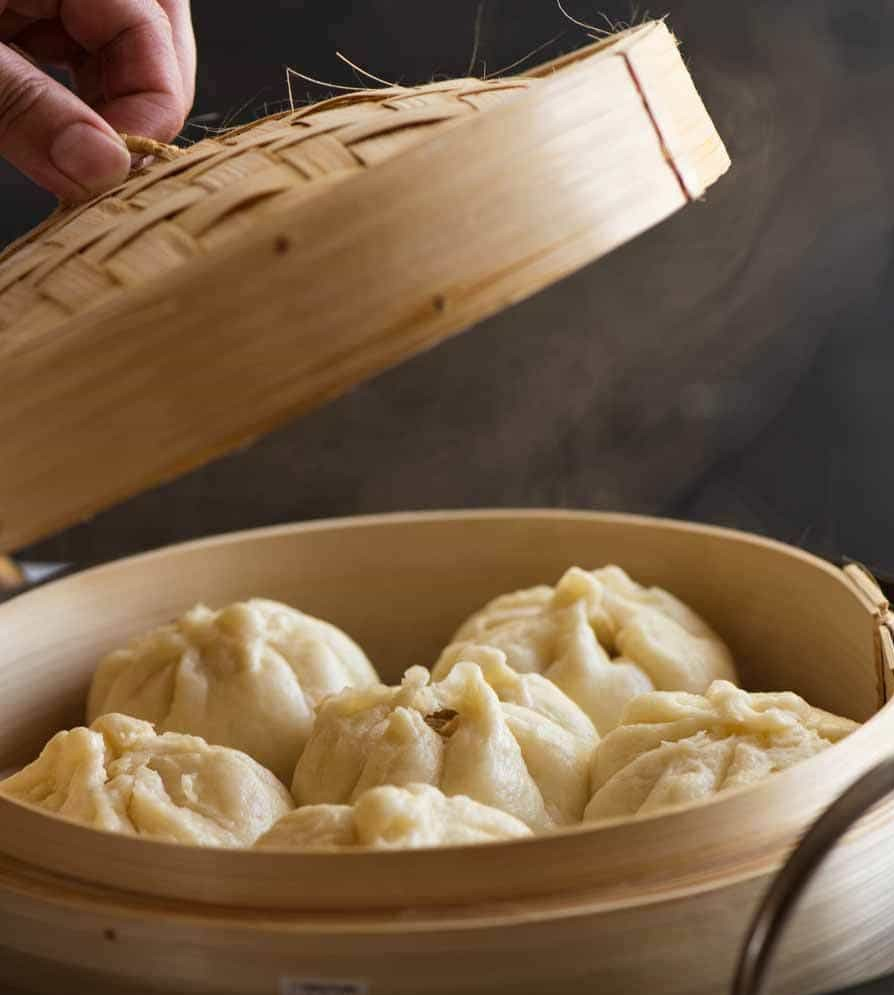
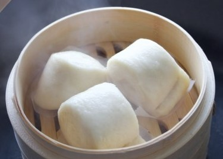

Baozi 包子

Baozi is also known as Baos which are Chinese buns. There are many types of buns throughout China, they can be made by steaming, pan frying, or baking. You can find baos at Dim Sum and in Chinese bakeries. Steamed buns and baked buns can be sweet and savoury, while pan-fried baos are savoury. The buns have many fillings. Sweet buns are filled with sugary pastes. Savoury buns are filled with meat and vegetables. In this post, we will talk about the popular baozi serve at Dim Sum.
Barbecue Pork Bun 叉燒包

Barbecue Pork Bun is also called Cha Siu Bao. The bun is filled with roasted barbeque pork. The pork is dipped with soy sauce, hoisin sauce, and oyster sauce. The bun can be both baked or steamed. The steamed bun is fluffy and the baked bun is crispy on the outside and is soft in the inside.
Custard Bun 奶黃包

The custard bun is very fluffy, sweet and moist. The custard is made of a milk and egg mixture. The buns are steamed and best served when the custard is runny and warm. If the custard filling is not runny and smooth the bao will be to dry.
Mantou 馒头
This is a steamed sweet bun. This bun does not have any fillings making it is one of the fluffiest bun served at Dim Sum. This bun is perfect as it is sweet but mostly has a bland taste. This bao is can be dipped into condensed milk to make it sweeter. Mantou can be served at restaurants, but you can buy frozen Mantou to make your own at home.
Shengjian Bao 生煎馒

This bun is made by steaming the bao and then pan frying. It is a soft bun but is also oily with the dough being moist. The filling of this bun is made with pork, green onions and a bit of finely chopped vegetables.
XiaoLongBao 小笼包

This bun is very moist causing it to be like a dumpling rather than a traditional bao. It is filled with soup which makes it like a dumpling. There are two ways to make the dough, the first method is to make it fluffy. The other method is to use a thinner dough, The bun is has a lot of stuffing, it is commonly filled with pork and soup but can have a variety of fillings. Please remember this dish can be made differently depending on the restaurant.
News
We are slowly going to review restaurants other than Chinese restaurants. If you would like us to review your restaurant contact us! Visit our about page for more information
Updates
We constantly update our website. New food and restaurants are going to be posted. Check our updates for more information.
Our Latest Post: Dumplings

Restaurant of The Month